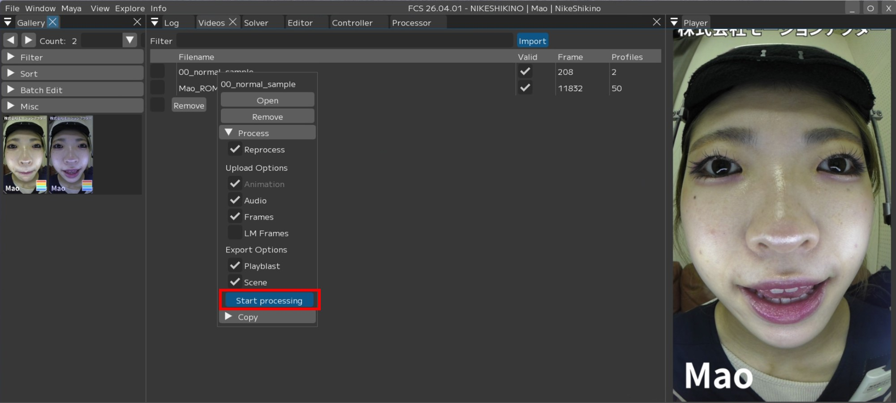
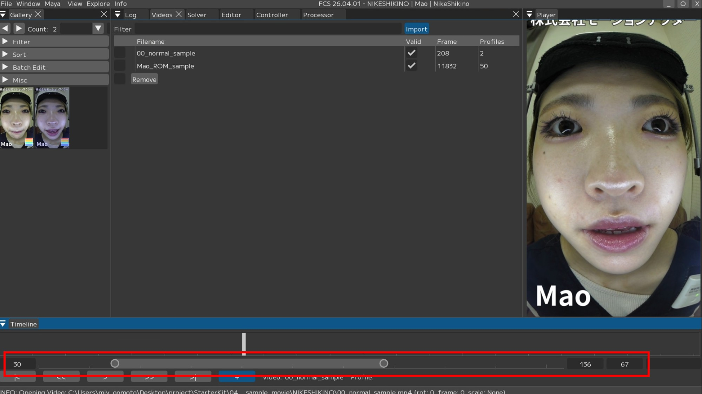
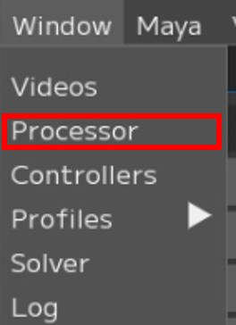
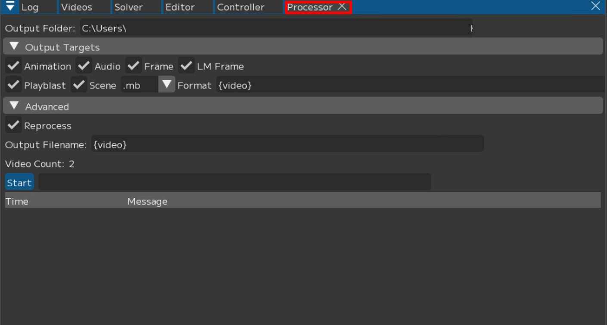

How to Output Animation
Caution
If the video to be analyzed was shot with a wide-angle lens, you need to change the Solver settings.
For details, see User Guide/Menu/Window/Solver.
Single animation output
Note
For an explanation of the output screen items,
see User Guide/Menu/Window/Videos.
1. Right-click on the name of the video you want to analyze/output in the Videos window.
A context menu will appear – select Process and check the applicable items.

2. Press [Start process].
{kind=link}

Note
If you want to review the analysis results before making further adjustments, unchecking Playblast and Scene can save time.
{kind=link}
{kind=link}
3. During output, the checked items will be applied to the Maya scene.
Audio data on the time slider
Image sequence on the image plane
Applied in the order of animation data
The slider moves when animation data is being applied
4. Output complete
If Playblast or Scene was checked,
Explorer will pop up when the output is finished.

Reprocessing and outputting only a partial range of the video
Using the Timeline’s partial display feature, you can output animation for only the range displayed in the FCS Timeline.
*This feature is available in FCS 25.04.02 and later.
1. Set the FCS Timeline range to the portion you want to output as animation.
{kind=link}

2. Right-click the video name in the Timeline, check [Segment Only],
and press [Start processing].

About the Maya Start value
You can output the animation of the range specified in FCS to a specified frame in Maya.
Example:
FCS Timeline specified range: 100F - 200F
Maya Start: 50
In this case, the animation will be output to Maya’s 50F - 150F.The default is ‘-1’.
In this case, the output will be at the same frames as the range specified in FCS.
Example:
FCS Timeline specified range: 100F - 200F
Maya will also output to 100F - 200F.
Caution
This can only be executed from the menu displayed by right-clicking the video name in the Timeline.
(It cannot be executed from the Videos window.)
3. Animation will be output only for the specified range.

Multiple animation output
Note
For output item details, see User Guide/Menu/Window/Processer.
1. Check the videos you want to analyze and output in the Videos window.

2. Open the Processor window and check the items you want to output.
 |
 |
Note
You can set a custom output file name by changing the Output Filename.
{solver} : Solver name
{video} : Video file name
{user} : Windows user name
{project} : Project folder name
{chara} : Character name
{actor} : Actor name
{%Y%m%d}, {%H%M%S} : Date (YYYYMMDD), Time (HHMMSS)
Setting it to {video} only will output with the imported video name.
3. Once configured, press [Start] to begin processing.

4. Explorer will pop up when the output is complete.
About Camera and Image Plane
When Frames or LM Frames is checked, an image sequence will be set on the image plane in Maya.
Set the name of the camera and image plane where you want to set the image sequence from
“Settings/Maya/Camera” and “Settings/Maya/ImagePlane”.
*For Settings, see User Guide/Menu/Settings.
The default settings are as follows.
Image Plane -> imagePlane
Camera -> fcs_cam
If a camera or image plane with the specified name does not exist in the scene, a new one will be created.
Please set the camera name as needed to match your pipeline.